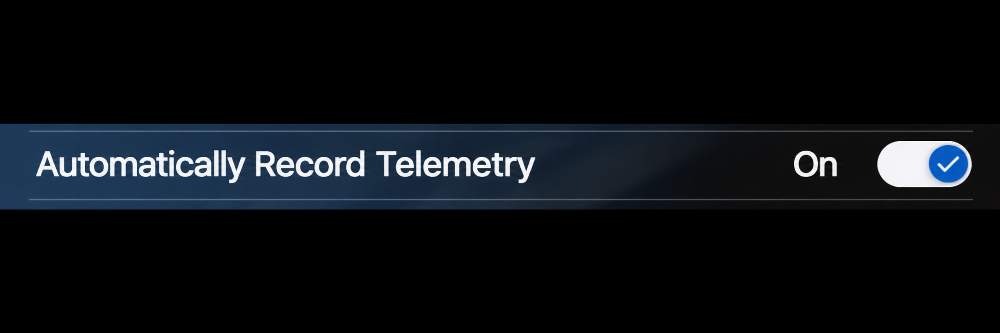

Aero Visualiser
Solid · Loaded / Dashed or hollow · Reference
Ride Height at Cursor
Schematic · ride height exaggeratedFront · Rear · Possible Floor Contact
Suspension Visualiser
Solid · Loaded / Dashed · Reference
Front Left / FrontFront Right
Rear Left / RearRear Right
■ Travel Limit / Possible Bottoming■ Possible Floor Contact
Bottoming and Floor Contact Limits
Enter known compression and floor clearance limits for this car. Blank compression limits use repeated clipping as a possible bottoming indicator. Floor contact markers require a clearance limit.
Driver Trainer is for Practice Sessions Only
Checking saved practice sessions may take a few minutes.
Use telemetry from in-game Practice sessions to pick one thing to work on in your next stint.
Current Session
Comparing With
New practice sessions load automatically after three clean, timed laps in one stint.Lap in StintCurrent StintPrevious StintCold Tyres
Corners Ordered by Variance: Most to Least
- Loaded Session
- No session loaded
- Loaded Reference
- No reference lap loaded
Loading session recordings…
No recent sessions match these filters.

| Date and Time | Track | Session Result | Best Lap | Timed Laps | Distance Driven | Reference |
|---|
Files That Did Not Import
No laps imported yet.
| Driver | Track | Layout | Car | Best Lap | Game Version | Actions |
|---|
Total distance driven
Total hours on track
Favourite car by class
Favourite Track
Gold 0
Silver 0
Bronze 0
| Class | Car | Best Lap | S1 | S2 | S3 | Optimal | Date | Game Version | Telemetry Available | Reference |
|---|
No Session Loaded
Open a session or import a lap to view its telemetry.
Session Details
Conditions
- Session Length:
- Weather:
- Track Temp:
- →
- Air Temp:
- →
- Track Wetness:
- Wind:
In-Car Settings
Sector Times
| Sector | Current Lap | Fastest Lap | Optimal | vs Reference |
|---|